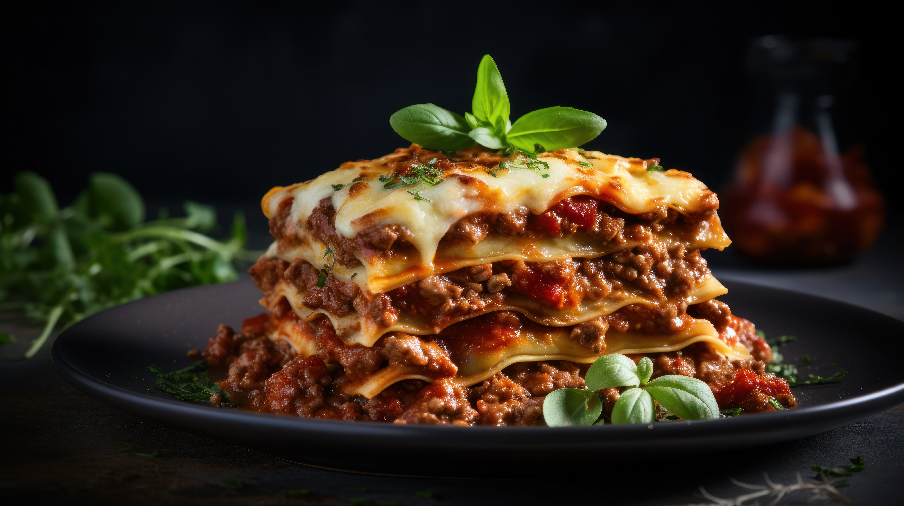

Lasagna

A Traditional Lasagna With Bolognese Sauce
Ingredients
- 4 tbsp / 2 ounces / 60g unsalted butter
- 4 tbsp / 1.25 ounces / 35g all-purpose flour
- 3 cups / 700ml milk
- Kosher salt
- Freshly ground black pepper
- Pinch of grated nutmeg
- 2 pounds / 900g lasagna noodles
- Vegetable oil for greasing pasta
- 1.5 quarts / 1.5L warm Bolognese sauce
- 3 ounces / 85g Parmigiano Reggiano cheese
Steps
Preparing the Béchamel Sauce
- In a small saucepan, melt butter over medium-high heat. Do not allow it to brown.
- Add flour and whisk to form a paste. Continue to cook, stirring, until raw flour scent is gone, about 1 minute.
- Add milk in a thin, steady stream or in increments, whisking thoroughly to maintain a homogeneous texture. Sauce will initially become very thick, then get very thin once all the milk is added.
- Heat, stirring, until sauce comes to a simmer and begins to thicken slightly.
- Reduce heat to low and cook, stirring, until sauce is just thick enough to coat the back of a wooden spoon, about 3 minutes.
- Season with salt and pepper.
- Whisk in nutmeg. If any lumps form, simply whisk thoroughly to remove them and smooth out sauce, or use a hand blender or countertop blender if lumps are particularly large or tough.
Cooking the Pasta
- In a pot of salted boiling water, cook pasta, working in batches if necessary, until al dente.
- Use a spider or mesh strainer to transfer immediately to a large ice bath to cool.
- Drain pasta well, then rub each sheet lightly on both sides with vegetable oil to prevent sticking..
Assembling and Baking the Lasagna
- Preheat oven to 375°F (190°C).
- Grease a 9- by 13-inch baking dish with butter.
- Spoon a thin, even layer of Bolognese sauce on bottom of baking dish
- Lay down a layer of lasagna noodles. It's okay if they overlap somewhat, but you can cut any sheets that are too large to avoid excessive doubling up.
- Top pasta with another thin layer of Bolognese sauce (thin enough that you can see the pasta through it in some spots).
- Drizzle a small amount of the béchamel sauce all over the Bolognese sauce, then top with grated Parmigiano Reggiano.
- Repeat this layering process with pasta, Bolognese, béchamel, and grated cheese until baking dish is full; this should be about 6 layers.
- Finish with a top layer of pasta, then coat that with an even layer of the remaining béchamel sauce. Grate a final generous amount of cheese on top.
- Bake lasagna until bubbling and browned on top, about 35 minutes.
- Let rest 10 minutes, then serve.